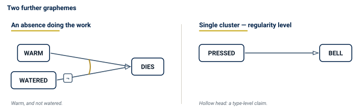
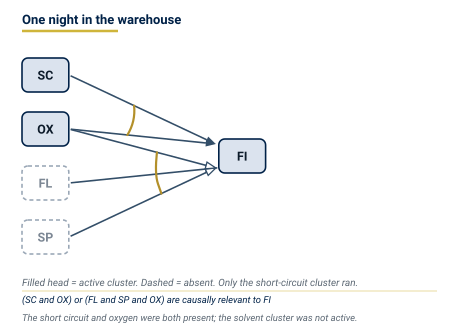
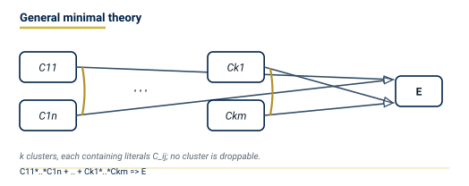
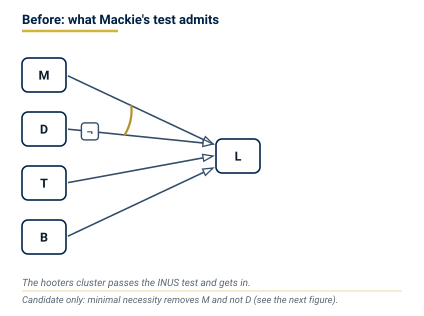
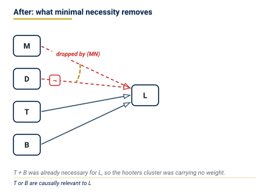
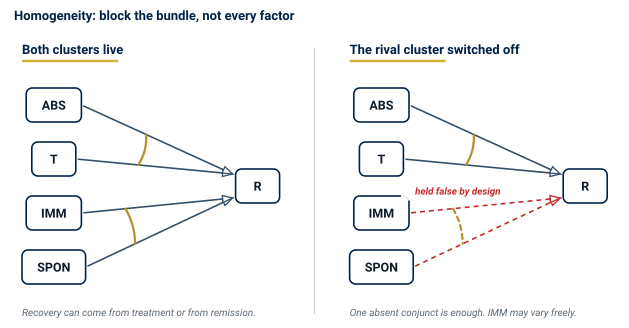
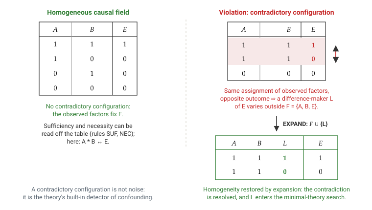
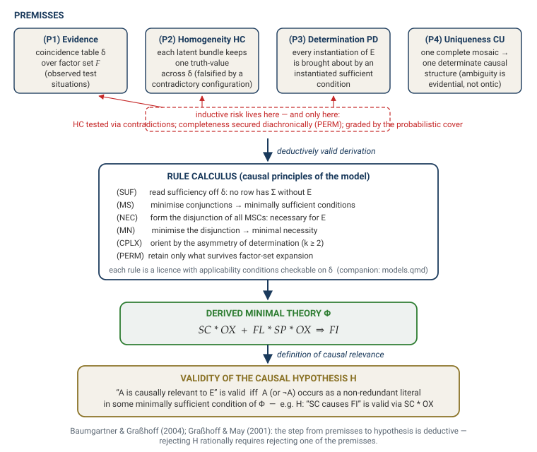
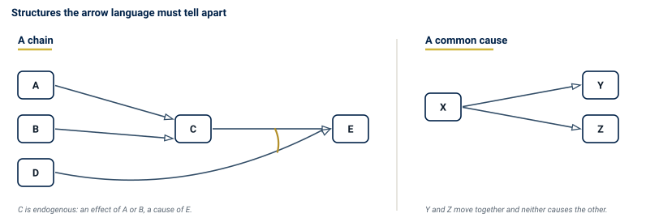

Causal Regularity Theory I: Qualitative Inference
Minimal Theories, Homogeneity, Causal Hypergraphs, and Scientific Reasoning
![]()
A short circuit causes a fire although it is neither sufficient for fire nor necessary for it; ice-cream sales predict drownings and cause none. This volume develops the one definition that separates the two cases and then refuses to add a second. A factor is causally relevant to an outcome when it is an indispensable part of one of the sufficient combinations that bring the outcome about — a cluster, in the language of the theory — and when it stays indispensable however far the record is widened. That is permanent membership in a cluster of a minimal theory, in the sense of Graßhoff and May (2001), and it is stated without counterfactuals, interventions, or probability. From it follow, in order: the homogeneity condition that licenses reading a theory off a table of cases — a far weaker and more useful condition than Mill’s demand that all else be equal; the deductive schema that carries a hypothesis from premisses to verdict; the causal hypergraph that stores the result; and a normative registry of what a verdict licenses and what it does not. Every structure is drawn as well as written, in a diagram language whose marks correspond one-to-one with the formulae. Volume II extends the definition to replicated experimental data; Volume III tests it against the case repertoire of the tradition.
causal regularity theory, minimal theories, INUS conditions, coincidence analysis, causal hypergraphs, homogeneity condition, fallacy detection, qualitative causal inference
Causal Regularity Bundle — Volume I. Companion volumes: II (experimental inference), III (casebook). Formal calculus: models.qmd. Terms are used in the senses of the LWgrammar register causal-regularity.
Introduction
A factor caused an outcome, in the only sense this volume defends, when it was an indispensable part of a sufficient combination of conditions — and when every other sufficient combination was also genuinely needed to account for all the cases — and when this stays so however far the record of cases is widened. The next three sections build this claim from one concrete example; the rest of the volume derives its consequences.
A fire, and a question that only looks easy
A warehouse burns down. The investigator’s report names a cause: a short circuit in the wiring behind the north wall. Nobody disputes that the short circuit happened, and nobody disputes that the fire happened. The disputed word is the one in between — caused.
What would make the report right? The obvious answers both fail immediately.
The short circuit was not sufficient for the fire. Short circuits occur in that building several times a year and burn nothing; the wiring arcs, a fuse trips, an electrician is called. Nor was it necessary. A warehouse of that kind can be lost to a spark near the solvent store with the wiring in perfect order. So the cause named in the report is neither sufficient nor necessary for the effect it is said to have produced.
And yet the report is very probably correct. Whatever “caused” means here, it is not “sufficient”, not “necessary”, and — as the next paragraph shows — not “reliably associated” either.
Consider a second report. In a coastal town, ice-cream sales and drownings rise and fall together, year after year, with a correlation an epidemiologist would envy. No investigator would write that ice-cream causes drowning. The association is as constant as any in the fire case; what is missing is something the correlation itself cannot supply.
Two claims, then, that look alike in the data and differ completely in their standing. A theory of causation earns its keep by saying, precisely and without appeal to intuition, what the difference is.
What the available tools say
The methods in daily use answer this question in incompatible ways. Statistical inference speaks of probability-raising and needs causal assumptions the data cannot check. Qualitative comparative analysis (QCA) looks for patterns in which conditions are simply present or absent but stops short of a principled account of causal direction and of what a comparison must hold steady. A researcher who runs both has not obtained a convergent answer; they have obtained two answers resting on two sets of premisses, which is not the same as being twice as sure.
What is missing is a single definition of causal relevance that (a) can be applied to observable data, (b) yields the familiar experimental designs as special cases rather than as a separate topic, and (c) states exactly what a verdict licenses — and what it does not.
One definition
Return to the fire. The short circuit was not sufficient on its own — but a short circuit in the presence of oxygen was. That combination is sufficient, and neither of its two parts can be dropped: remove the oxygen and nothing burns; remove the short circuit and, on that night, nothing ignites it. The combination is therefore sufficient and contains nothing idle. Call such a combination a cluster.
The short circuit was not necessary either, because the solvent store offers another way in: flammable liquid, a spark, and again oxygen. That is a second cluster. Between them the two clusters cover every fire in the record, and neither can be struck out without leaving fires unaccounted for.
The whole causal claim is now one line:
\[ \text{SC} * \text{OX} \quad + \quad \text{FL} * \text{SP} * \text{OX} \quad \Rightarrow \quad \text{FI} \]
Reading. A fire breaks out exactly when either a short circuit occurs with oxygen present, or flammable liquid meets a spark with oxygen present — and in no other way recorded in this field.

The verdict on the report follows from where the short circuit stands in the formula: SC is one of the parts of one of the clusters, and it is not a spare part. That, and nothing more, is what “the short circuit caused the fire” asserts.
The fire example has used a handful of terms, and they carry all the weight.
Each letter of the key names a factor: a kind of condition — a short circuit, oxygen being present — that in any one case is either present or absent (Section 3.1 gives the exact account). A literal is a factor together with its sign: either “was present” or “was absent”. A conjunction is an and-combination of literals, a disjunction an or-combination of such conjunctions.
A cluster is what the formulae write as a minimally sufficient condition (MSC): a conjunction of literals that is sufficient for the outcome and from which no conjunct can be dropped without loss of sufficiency (Graßhoff and May 2001, 94). An INUS condition in Mackie’s sense (1965) — an Insufficient but Non-redundant part of an Unnecessary but Sufficient condition — is one conjunct of such a cluster, not the cluster itself. A minimal theory is the disjunction of those clusters, itself minimally necessary for the outcome: no cluster can be removed without leaving positive cases uncovered (Graßhoff and May 2001, 96). A factor set \(\mathcal{F}\) is the explicit finite list of factors, the outcome included, whose joint values constitute the rows of the table of cases — the coincidence table. These terms are defined with their tests in Section 3.2; they are used in those senses only.
The register causal-regularity records the remaining vocabulary of this volume — causal field, homogeneity (three senses, of which only two are operative), background bundle. When a sense matters for an inference, the sense label is cited.
This volume takes the definition from Graßhoff and May (2001, 100). A factor \(A\) is causally relevant to outcome \(E\) if and only if, for every factor set \(\mathcal{F}'\) that contains both \(A\) and \(E\), there is a minimal theory of \(E\) over \(\mathcal{F}'\) in which a literal of \(A\) is a non-droppable conjunct of some cluster. Causal relevance is Boolean — yes or no — not a degree.
The clause about every factor set is what disposes of the ice-cream. As long as the record contains only ice-cream sales and drownings, ice-cream sales do appear in a cluster: the pattern is there. Add the summer heat to the record and the sales drop out — every drowning is accounted for without them, and the cluster that contained them is no longer needed. A factor that dissolves when the record is widened was never causally relevant; it was standing in for something else. Causal relevance is permanent membership, and that is why causal knowledge stays open to revision by the next study.
How to read the pictures
Everything in this volume can be drawn, and the reader who learns one graphical convention now will be able to read every diagram that follows. It is worth the two minutes, because the convention is not decoration: each mark in a diagram stands for one thing in the formulae, and nothing appears in a diagram that has no counterpart in them. The language is specified in full in the companion document causal-visuals.qmd; what follows is all that is needed to read Volume I.
Arrows run from causes to the effect, left to right. The one thing to learn is what it means when arrows are tied together by an arc.

Arc and no arc, together with the arrows that combine the causes into the effect, are the core of the grammar. Two further marks complete what the cases need: negation, which belongs to the elementary set, and the fill of the arrowhead, which marks the level of the claim.

The fire theory of the previous section is now a picture rather than a formula, and the two say exactly the same thing:
Diagrams so far describe types of situation. A diagram can also record what happened on one particular night, by shading the factors that were in fact present:

- Find the effect. It is the node the arrows point at.
- Look for arcs. Arrows tied by an arc are parts of one cause.
- Count the clusters. Each untied arrow is a cluster by itself; each arc-tied group of arrows is one cluster together. Several clusters mean the effect is equifinal — reachable in more than one way.
- Check the marks. A ¬ mark on a shaft, near the factor, means an absence is doing the work. The arrowhead’s fill gives the level: a hollow head marks a type-level causal regularity; a filled head marks the active cluster in a concrete instantiation.
Theoretical lineage
The regularity tradition develops in four stages. Hume (1739) established causation as constant conjunction. Mill (1843) introduced the method of difference, whose demand that the compared instances have every circumstance in common save one is the totality condition, and took the cause to be the entire set of conditions on which the effect follows. Mackie (1965, 1974) showed that a single effect can have several sufficient clusters, so that no cluster need be necessary, and that a cause is an INUS condition. Graßhoff and May (2001) completed the account by adding minimal necessity of the disjunction and the persistence of causal relevance under every expansion of the factor set; the bundle-level homogeneity condition that replaces Mill’s unsatisfiable totality clause belongs to the same programme (Section 3.2.2, novelty 6). Baumgartner and Graßhoff (2004) gave the systematic reconstruction; Baumgartner (2008, 2009) extended it to multi-outcome structures; Baumgartner and Falk (2023) added the elimination of structural redundancies and the assumption of causal uniqueness.
This volume implements the Graßhoff/May position. Coincidence analysis (CNA) and related Boolean methods are treated as developments inside that tradition.
The same definition is the contract for three audiences — scholars, practitioners who evaluate claims in clinical or legal settings, and agents that must assess such claims in natural language — because the warrants and inhibitors are the same in each case. Volume II extends the definition to replicated experimental data; Volume III tests it against the case repertoire of the tradition.
Contributions of this volume
The volume argues for four theses, each of which can be disagreed with.
- One definition suffices. Cluster-membership in a minimal theory over an explicit factor set and a homogeneous field generates the qualitative apparatus without borrowing from a rival account (Section 3.2, Section 4).
- Bundle-level homogeneity replaces Mill’s totality. The operative condition is not that every background factor be identical — a demand no real field meets — but that each latent background bundle have constant truth-value across the field. That condition is falsifiable by a contradictory configuration (1).
- Causal inference is deductive. From stated premisses and causal principles, the validity of a hypothesis follows by valid steps. Inductive risk is relocated into the premisses, where it is empirically controllable (Section 3.4).
- The normative standard is one registry. Eleven inference warrants (INF-01–11), ten fallacy inhibitors (FALL-01–10), and eight standard rules (STD-1–8) are defined once; the engine, the skill file, and this volume’s tables are generated from that registry or checked against it (Section 5).
The qualitative theory
The following sections state the definitions, the homogeneity condition, the deductive schema, and the hypergraph. Volume II takes up the replicated, noisy regime.
The Regularity Theory of Causal Relevance
What kinds of things are factors?
Before stating definitions it is necessary to say what the variables in them stand for.
A factor represents an event type — a repeatable kind of condition or occurrence. “Short circuit in the wiring”, “oxygen present”, “warehouse on fire” are event types. A causal claim about them is a claim about kinds: it says that conditions of one kind bring about conditions of another kind, whenever the right combination of them is present. This is type-level causation — the subject of Volumes I and II.
In any one case — one episode, one trial, one observation — an event type is either present or absent. The particular short circuit that occurred behind the north wall on the night of 14 March is a token of the type “short circuit”. The table of cases records, for each case, which types were instantiated in it. A factor takes value 1 when its type is instantiated in that case, and 0 when it is not. Everything in this framework is yes or no, with no intermediate degrees — in the language of logic, every factor is Boolean. A causal verdict is the same: a factor is either causally relevant to an outcome or it is not.
Volume III goes further and asks, case by case, which particular cluster was actually instantiated in that specific episode — this is token causation or actual causation. The type-level regularity is established first; the token-level verdict identifies which of the theory’s clusters did the work in the case under examination.
The theory is stated in a notation that is used unchanged for the rest of the volume and in the engine’s own output, so that a formula in a figure and a formula in a returned verdict can be read as the same object.
*, +, ~, and => correspond one-to-one with the typeset symbols.
| Symbol | Reads | Example |
|---|---|---|
| \(A\), \(B\), \(E\) | factor, taking a positive or negative value | \(E\) = fire |
| \(\neg A\) | the negative value of factor \(A\), written ~A in the engine |
\(\neg\text{OX}\) = no oxygen |
| \(A * B\) | conjunction, written A*B in the engine |
\(\text{SC} * \text{OX}\) |
| \(X + Y\) | disjunction of clusters | \(\text{SC} * \text{OX} + \text{FL} * \text{SP} * \text{OX}\) |
| \(X \Rightarrow E\) | a minimal theory: \(X\) is sufficient and disjunctively necessary for \(E\), written in the causally oriented direction | \(\text{SC}*\text{OX} + \text{FL}*\text{SP}*\text{OX} \Rightarrow \text{FI}\) |
| \(X \leftrightarrow E\) | material equivalence: \(X\) and \(E\) take the same value in every case, with no direction claimed | \(c \leftrightarrow s*r\) holds in \(\delta\) |
| \(\mathcal{F}\) | the factor set, every factor named, the outcome included | \(\mathcal{F} = \{\text{SC}, \text{OX}, \text{FL}, \text{SP}, \text{FI}\}\) |
| \(\delta\) | the coincidence table: the observed test situations of the field | the nine rows of Volume III, Case A-01 |
| \(C_E\) | the number of contradictory configurations for outcome \(E\) | \(C_E = 0\) |
| \(B_E\) | the contradiction burden: the smallest share of rows that must go for \(E\) to be constant within every observed configuration | \(B_E = 0.197\) (Volume III, Case B-16) |
From Mackie’s INUS conditions to minimal theories
Mackie’s causal field and INUS conditions
Mackie (1965, 1974) articulates the structure of causal regularities with two innovations that the present framework inherits. The first is the causal field: causation is always relative to “a background against which the causing goes on” (Mackie 1974, 63). In Mackie’s usage, this background consists of standing conditions treated as given, excluded from the causal question. The causal field is not a universal constant but an explicit choice; changing it can change which factors count as causes.
The second innovation is the identification of the logical structure of a single cause. One and the same effect can have many distinct clusters — conjunctions of positive and negative factors — each sufficient to bring about the effect in the given causal field. No single cluster need be necessary: the effect can occur via another. A complex regularity has the form:
\[ C_{1,1} * \ldots * C_{1,n} + \ldots + C_{k,1} * \ldots * C_{k,m} \Rightarrow E. \]
Reading. Outcome \(E\) occurs exactly when at least one of the \(k\) clusters fires — meaning that all the conjuncts of that cluster are satisfied. Each \(C_{i,j}\) is a single literal — a factor or its absence; the subscript \(i\) identifies the cluster and \(j\) the position within it.

A cluster is minimally sufficient: sufficient because every test situation satisfying it has \(E\), and minimal because each of its conjuncts is necessary for that sufficiency — no conjunct is redundant (Mackie 1974, 62). A single factor \(C_{i,j}\) within such a cluster is an INUS condition for \(E\): an Insufficient but Non-redundant part of an Unnecessary but Sufficient condition (Mackie 1965).
Mackie’s account does not, however, impose any minimality requirement on the disjunction of clusters (Graßhoff and May 2001, 96), leaving the disjunction free to contain redundant clusters arising from correlations among the effect’s causes. Nor does it resolve the direction of causation. Graßhoff and May (2001) supply exactly what is missing.
Graßhoff and May: the six novelties of minimal theories
Graßhoff and May (2001) introduced the minimal theory as the analysans of causal relevance, developing Mackie’s account while keeping its reductive character — avoiding possible worlds, interventions, and causal primitives. A minimal theory adds six components that Mackie’s complex regularity lacks.
- Relativisation to an explicit factor set. All causal claims are relative to a set \(\mathcal{F}\) of observed factors. Sufficiency and necessity hold relative to \(\mathcal{F}\), and the definition specifies what happens when \(\mathcal{F}\) is expanded.
- Minimal sufficiency of every cluster. Every cluster must be minimally sufficient: each conjunct is necessary for the cluster’s sufficiency (Graßhoff and May 2001, 94). This is shared with Mackie but stated precisely relative to the factor set.
- Minimal necessity of the disjunction — the decisive innovation. No cluster may be dropped without the disjunction ceasing to be necessary for \(E\) (Graßhoff and May 2001, 96). Mackie minimises inside a cluster but never between clusters, and the gap is not a technicality: it is what lets a mere symptom pass as a cause. The next subsection works the case through.
- Stability under factor-set expansion. A factor qualifies as causally relevant only if it remains non-redundant under every suitable expansion of the factor set. Causal relevance is permanently, not merely locally, non-redundant — Graßhoff and May’s “Principle of Persistent Relevance” (Graßhoff and May 2001, 99–100).
- Direction from structural non-symmetry. Any single cluster is sufficient for \(E\), whereas \(E\) determines only the complete disjunction, not which cluster was instantiated. With at least two alternatives, this non-symmetry grounds direction without temporal order, agency, or intervention (Graßhoff and May 2001, 97–99).
- Minimal homogeneity instead of Mill’s totality of conditions. The background assumption that licenses causal inference from a causal field is not the constancy of every causally relevant unmeasured factor — a demand never satisfied by any real field — but the far weaker condition that every latent rival cluster be switched off, which a single shared absent conjunct achieves for an entire cluster. The 2001 paper does not yet state the condition in this form; it speaks of a ceteris-paribus clause under which “other blocking factors are prohibited” (Graßhoff and May 2001, 99–100). The bundle-level formulation used in this volume is given in
- This replacement of Mill’s totality clause by cluster-level blocking is what makes controlled experimentation possible and efficient.
The Manchester hooters: what minimal necessity does
Of the six, the third is the one that changes verdicts, and Mackie’s own example, here in a simplified reconstruction, shows why (Mackie 1974, 81–86; Graßhoff and May 2001, 101–4).
Every workday at five o’clock the hooters sound in the Manchester factories (\(M\)), and a moment later the workers of London put down their tools and go home (\(L\)). The regularity is perfect. It has held for years. Nobody in London can hear the hooters.
What is going on is plain enough: knocking-off time (\(T\)) is five o’clock in both cities. It sounds the hooters in Manchester and it sends the Londoners home, and the two effects of that one cause are therefore found together without either causing the other. The hooters are a symptom of five o’clock, not a cause of anything in London.
The task for a theory of causation is to derive that verdict rather than assert it. Mackie’s cannot. Write \(B\) for the alternative cause that also sends Londoners home — the foreman’s early dismissal — and \(\neg D\) for the record that the hooters were not sounded off-schedule, by a drill or a fault. Then \(M * \neg D\) is a genuine minimally sufficient condition for \(L\): whenever the hooters sound and they were not sounded off-schedule, the Londoners do go home; and neither conjunct can be dropped, since off-schedule hooters are followed by nobody going anywhere, and the mere absence of an off-schedule sounding holds at every hour of the day. Mackie’s test is passed, and the hooters are admitted into the causal structure:

Minimal necessity asks a question Mackie never asks: is this cluster needed? Strike it out and see whether anything goes unexplained. Nothing does. Every occasion on which the Londoners go home is already an occasion on which either knocking-off time or the foreman’s dismissal obtains — \(T + B\) is by itself necessary for \(L\). The hooters cluster never has to do any work, because the hooters sound only when it is five o’clock, and five o’clock is in the theory already. The cluster is a free rider, and minimal necessity removes it:

The theory that survives is \(T + B \Rightarrow L\).
Reading. The Londoners go home exactly when either knocking-off time arrives or the foreman dismisses them early — and in no other way in this record. The letter \(M\) does not occur in it. By the definition of Section 3.2, the Manchester hooters are therefore not causally relevant to the Londoners going home — not because a rule was invented to exclude them, but because the requirement that a disjunction carry no idle disjunct removed them on its own. The same move disposes of every joint effect of a common cause: the falling barometer and the storm, the yellowed fingers and the lung cancer, the ice-cream and the drowning. Each is a symptom riding on a cause that is already in the theory (Graßhoff and May 2001, 104). The full derivation, line by line, with its coincidence table, is given in the companion document models.qmd.
Formal definitions
The definitions that follow are given in the order in which each is needed by the next, and the sequence is short. A causal claim has to say about which cases it is made — the field. Those cases are described by a fixed list of yes/no factors — the factor set — each of which may be present or absent in a case — the literals. Conjunctions of literals that suffice for the outcome and contain nothing idle are clusters; the disjunction of the clusters that are genuinely needed is the minimal theory; and membership in it is causal relevance. Every term is used in this volume in the sense fixed here and nowhere in a looser one.
Definition: causal field
(Register: causal field, I.1; background conditions, I.1.)
Causal claims are not made about the universe. They are made about a range of cases — this population, this period, these measured conditions — and the same factor may be relevant in one range and irrelevant in another. Oxygen is not mentioned as a cause of ordinary house fires because it is present in all of them; in a sealed laboratory chamber it is the first thing one would name. The field is the explicit statement of the range, and it is required precisely because leaving it implicit is how causal claims become unfalsifiable.
A causal field is the set of test situations observed under the factor set \(\mathcal{F}\): the finite collection of cases in which all factors and the outcome are recorded, together with the population, time frame, and measured conditions that delimit it. Causal claims are made relative to a field and are elliptical without one, which is what Standard Rule 1 (STD-1) requires them to state.
The background conditions of a causal analysis are the factors of the process that are not elements of \(\mathcal{F}\) — unrepresented factors, not recorded in the coincidence table. They are not individually required to be constant or identical across test situations. They enter the analysis only collectively, through background bundles: once clusters are defined (below), the background bundle \(L_j\) of a cluster \(C_j\) is the conjunction of those of its literals that are not recorded — its latent part. (When the factor under test \(T\) is the only recorded cause factor, as in a two-arm comparison, these are exactly the literals of \(C_j\) that do not involve \(T\).) The homogeneity condition (1) requires only that the truth-value of each such bundle be constant across the field — a condition achievable by a single commonly absent conjunct, without demanding uniformity of any individual background factor.
Definition: factor and factor set
(Register: factor, I.1; factor set, I.1.)
A factor \(F \in \mathcal{F}\) is a Boolean variable representing an event type: it takes value \(1\) when that event type is instantiated in a case, and \(0\) when it is absent. It is not the event itself but the type of event — a repeatable kind of condition that may occur many times across the causal field. The factor set \(\mathcal{F}\) is an explicitly specified finite set of such variables; it contains the outcome \(E\) as well as the factors that may cause it. A configuration is a complete assignment \(c : \mathcal{F} \to \{0,1\}\), recording which event types were instantiated in one particular case. The coincidence table \(\delta\) is the list of the configurations observed in the causal field, one entry per test situation; identical configurations from different test situations are listed, and counted, separately.
Definition: literal
(Register: literal, I.1.)
A literal \(\ell\) is a signed factor: either \(F\) (positive) or \(\neg F\) (negative). The literal \(F\) is satisfied in \(c\) if \(c(F) = 1\); \(\neg F\) is satisfied if \(c(F) = 0\).
Definition: cluster / minimally sufficient condition
Two requirements meet in this definition, and both are needed. Sufficiency alone is too cheap: the conjunction “short circuit and oxygen and the night watchman was humming” is perfectly sufficient for the fire, and no one wants the humming in the theory. Minimality is what throws the humming out — drop it and the remainder is still sufficient, so it was carrying nothing. What survives both requirements is a conjunction that is enough on its own and contains no passengers — it is a cluster. A merely sufficient conjunction that retains the watchman’s humming is not a cluster; nor is an INUS factor, which is one non-droppable part of a cluster, not the cluster itself. In the diagrams, one cluster is exactly one group of arrows tied by an arc — or a single untied arrow when the cluster has only one conjunct.
Definition: minimal theory
The same two-sided discipline is now applied one level up. A cluster was required to be sufficient and to contain no idle conjunct; the disjunction of clusters is required to be necessary and to contain no idle disjunct. The first requirement was Mackie’s; the second is the one he omitted, and Section 3.2.3 has shown what it costs to omit it. A theory that satisfies both is minimal in both directions at once: nothing can be removed from a cluster, and no cluster can be removed from the theory.
Definition: atomic minimal theory
(Register: atomic minimal theory, I.1.)
An atomic minimal theory — abbreviated asf, the engine’s label, from the coincidence-analysis term “atomic solution formula” — is a minimal theory for a single outcome \(E\) that is permanently redundancy-free: no literal becomes redundant under any admissible expansion of the factor set. An asf with two or more clusters is self-orienting by structural non-symmetry (novelty 5 above). An asf with exactly one cluster is oriented by process order (temporal or mechanistic precedence of the cause-factors) when that order is known; otherwise the engine reports the status UNORIENTABLE — the dependency is real but the structure alone cannot establish which direction is causal (see switch and subcause in the casebook). UNORIENTABLE is a report about orientation only; it has no grapheme of its own, and the fill of an arrowhead marks the level of a claim, never its orientation status (Section 1.4).
The homogeneity condition
The problem homogeneity solves
A table of cases does not wear its causal structure on its face. Two patients receive the drug and recover; a third receives it and does not. Has the regularity failed, or did something else happen to the third patient that the table does not record? Nothing in the table can answer that, and yet the whole enterprise of reading causal structure off comparisons depends on the answer. Homogeneity is the premiss that closes the gap: it is the assumption under which a comparison between cases is a comparison of the thing one is interested in, rather than of everything at once.
The obvious way to state it is also the ruinous one. Mill asked that the compared cases have “every circumstance in common save one” (1843, bk. III, ch. 8). Taken literally that is a demand no field has ever met. Two patients differ in age, genotype, diet, sleep, gut flora, and several thousand other respects, and if causal inference required those to be identical, no clinical trial ever conducted would have licensed a conclusion. Worse, the demand is not merely unattainable but unnecessary — and a methodological standard that forbids sound inferences is not a strict standard, it is a mistaken one.
The regularity-theoretic condition is far weaker, and the reason it can be weaker is structural. What has to be prevented is not that background factors vary but that a rival cluster fires differentially — that some other sufficient condition switches on in one case and off in another, so that the comparison reflects its coming and going rather than the factor under test. And a whole cluster can be shut down by a single one of its parts. A cluster is a conjunction: if one conjunct is reliably absent, the conjunction is false, and every other conjunct in it may vary as wildly as it likes without any effect whatever.

The practical consequence is the one that matters for experimental design. The goal is not to hold as much as possible constant — that is expensive, usually impossible, and often unnecessary. The goal is to find, for each rival cluster, the one conjunct that is cheapest to keep absent. Minimising the homogeneity demand is not a concession to practical limits; it is what makes efficient experimentation possible at all.
The three senses
The register records three senses of the term; only two are used in proofs, and the first is recorded precisely so that it cannot be smuggled back in.
The two operative senses differ in what they are good for, and the difference is worth holding onto. II.1 licenses reading a theory off a table, and it is falsified the moment a contradictory configuration turns up. III.1 licenses a single contrast — the difference test that an experiment performs — and it tolerates contradictions elsewhere in the table, because an experiment is not trying to explain every case, only to isolate one factor.
The framework uses II.1 for all sufficiency-readings and III.1 for all difference-tests. I.1 is recorded as the error and is never used in a proof.
Worked example (fire)
Take the complete theory \(\text{SC*OX} + \text{FL*SP*OX} \Rightarrow \text{FI}\) and suppose an investigator records SC and OX only, treating FL and SP as latent. HC-strong would demand that FL and SP each be constant across all test situations — gratuitously, since their cluster fires only jointly. Minimal homogeneity demands only that the cluster FL*SP*OX be off, and one shared absence suffices: exclude sparks (SP \(= 0\) throughout), and flammable material may be present, absent, or varying in every test situation without any effect on FI or on homogeneity. Alternatively, the field OX \(= 0\) switches off both clusters at once — which is why no difference test for SC can be run in an oxygen-free field: every cluster is off, \(E\) is constant, and relevance claims are correctly suspended relative to that field. The full treatment of the fire case with coincidence table is in Volume III, Case A-01.
Worked example (clinical trial)
Suppose recovery R has the complete theory \(\text{T*ABS} + \text{SPON*IMM} \Rightarrow \text{R}\) — treatment with absorption, or spontaneous remission with a competent immune response — and the trial measures only T. HC-strong would demand constancy of ABS, SPON, and IMM across all patients: unattainable. Minimal homogeneity requires (i) the enabling partner ABS uniformly present (achieved by administration protocol and adherence monitoring), and (ii) the rival cluster switched off or balanced between the arms so that its firing is statistically independent of T. This is what randomisation is for: it is the device of choice exactly for those latent clusters that possess no accessible blocking point. The statin trial worked example applying this protocol is in Volume III, Case B-ST.
Definition: contradictory configuration
Two test situations \(c, c' \in \delta\) form a contradictory configuration iff they agree on all factors in \(\mathcal{F} \setminus \{E\}\) but disagree on \(E\).
Proposition: operational homogeneity test
Direct implication. If \(\delta\) is homogeneous for \(E\) in the bundle-level sense II.1 and \(E\) is causally determined (premiss P3, Section 3.4), then \(\delta\) contains no contradictory configuration.
Proof. Let \(c, c' \in \delta\) agree on all factors in \(\mathcal{F} \setminus \{E\}\). We show that \(c(E) = 1\) implies \(c'(E) = 1\). By (P3), if \(c(E) = 1\) then some sufficient condition of \(E\) fires in \(c\), and with it a cluster \(S\) of the complete structure contained in it. Decompose \(S\) into its measured part \(S_{\mathcal{F}}\) (its literals of factors in \(\mathcal{F}\)) and its background bundle \(L\) (its latent conjuncts). Since \(S\) fires in \(c\), both \(S_{\mathcal{F}}\) and \(L\) are true in \(c\). By (II.1), the truth-value of \(L\) is constant across \(\delta\), so \(L\) is true in \(c'\) as well. Since \(c\) and \(c'\) agree on all measured factors other than \(E\), and \(S_{\mathcal{F}}\) contains no literal of \(E\), \(S_{\mathcal{F}}\) is also true in \(c'\). Therefore \(S\) fires in \(c'\), and by sufficiency \(c'(E) = 1\). Exchanging the roles of \(c\) and \(c'\) gives the converse, so \(c(E) = c'(E)\). \(\square\)
Contrapositive. Given (P3) and a correct record, every contradictory configuration proves that some latent background bundle changed its truth-value — a latent alternative cluster fired in one test situation but not in the other (the bundle was not kept false), or a latent enabling partner of the cluster under study was not uniform (the bundle was true in one situation and false in the other). The contradictory pair localises the inhomogeneity, although it does not by itself name the bundle (see “Meaning and repair of a violation” below), and the repair is correspondingly local: restore bundle-constancy by design (block the differentially firing bundle via one absent conjunct), or expand the factor set by a conjunct of the offending bundle so that its firing becomes measured.
The exact contradiction test
The operational test is outcome-specific. Let \(X = \mathcal{F}\setminus\{E\}\) and let \(x\) denote one complete assignment of the measured factors in \(X\). For every observed \(x\), count
\[ n_x^+ = \#\{c\in\delta:c|_X=x,\ c(E)=1\}, \qquad n_x^- = \#\{c\in\delta:c|_X=x,\ c(E)=0\}. \]
Define the contradiction indicator and the number of contradictory configurations:
\[ I_x = \mathbf{1}(n_x^+>0 \land n_x^->0), \qquad C_E = \sum_x I_x. \]
The exact operational decision rule is:
- \(C_E>0\) — homogeneity violated for outcome \(E\). At least one identical measured configuration has both outcomes. Given causal determination, reliable measurement, and a single causal field, some latent background bundle changed its truth-value.
- \(C_E=0\) — homogeneity not falsified. This is not proof of homogeneity. If every measured configuration is observed only once, the test has no opportunity to find a contradiction. A clean report must therefore be read as no detected violation in these data, not as confirmation that every rival cluster is blocked.
For graded reporting, define the contradiction burden
\[ B_E = \frac{1}{|\delta|}\sum_x \min(n_x^+,n_x^-). \]
\(B_E\) is the minimum fraction of rows that must be removed or reclassified to make \(E\) constant within every observed configuration; an added factor that separates the contradictory rows repairs the same rows. The implementation reports both \(C_E\) and \(B_E\) through assess_homogeneity(cases, outcomes=[E]). In the kidney-stone data of Volume III, Case B-16, the four measured configurations all carry both outcomes, so \(C_E = 4\), and \(B_E = (6 + 71 + 36 + 25)/700 = 0.197\).
Meaning and repair of a violation
A contradiction does not by itself identify its source. Four possibilities must be distinguished:
- Unblocked rival cluster: a latent minimally sufficient condition fired in some test situations and not in others — no shared blocking conjunct held it off — or a latent enabling partner of the cluster under study was not uniform.
- Mixed causal fields: cases governed by different minimal theories have been pooled.
- Measurement or coding error: a factor or the outcome was recorded inconsistently.
- Inappropriate discretisation: a continuous difference-maker was collapsed into the same Boolean category.
The repair protocol is correspondingly ordered:
- check the contradictory rows and their provenance;
- correct measurement or coding errors;
- stratify cases that belong to distinct causal fields;
- block the differentially firing cluster by design, or expand the factor set;
- rerun the contradiction test before searching for a minimal theory.

The deductive path to the causal hypothesis
Causal inference is normally described as inductive, and the description carries a familiar resignation with it: one can never be certain, the data underdetermine the conclusion, and the gap between evidence and causal claim is simply the human condition of empirical science.
The regularity-theoretic tradition rejects the resignation without denying the gap (Baumgartner and Graßhoff 2004). Properly reconstructed, the inference is deductive: given the table, given that the field is homogeneous, and given that the outcome is causally determined, the causal conclusion follows. There is no leap at the end.
The uncertainty has not been conjured away — it has been moved. It now sits in the premisses, and that is a considerable gain, because a premiss can be stated, examined, tested, and if necessary rejected, whereas a leap can only be taken or refused. When a causal conclusion is wrong under this reconstruction, one can say which premiss failed. The homogeneity premiss in particular is testable against the very table it is a premiss about (1), which is why so much of this volume is spent on it.
The causal hypothesis
The claim under test always has the canonical form:
\(H\): factor \(A\) is causally relevant to outcome \(E\) relative to factor set \(\mathcal{F}\) and causal field \(\delta\).
Premisses
- (P1) Evidence. The coincidence table \(\delta\): the observed test situations.
- (P2) Homogeneity (HC, the homogeneity condition). \(\delta\) is a homogeneous causal field for \(E\) — in the bundle-level sense II.1 for a sufficiency-reading, in the contrastive sense III.1 for a difference-test (1).
- (P3) Causal determination (PD, the principle of determination). \(E\) is causally determined: every instantiation of \(E\) is brought about by the instantiation of some sufficient condition of \(E\).
- (P4) Causal uniqueness (CU). Every complete Humean mosaic — every complete coincidence table of the domain — corresponds to one determinate causal structure (Baumgartner and Falk 2023, sec. 5): residual ambiguity is always evidential, never ontological.
Rules
The derivation applies the rule calculus of the companion document models.qmd: (SUF) read sufficiency off the table; (MS) minimise conjunctions; (NEC) form the necessary disjunction; (MN) minimise the disjunction; (CPLX) orient the biconditional by the asymmetry of determination when there are at least two clusters, or by a known process order when there is only one; (PERM) retain only components that survive factor-set expansion.
Proposition: deductive validity of the difference test
Let \(c_1, c_2 \in \delta\) agree on all factors in \(\mathcal{F} \setminus \{A, E\}\), with \(A = 1\) in \(c_1\) and \(A = 0\) in \(c_2\), and \(E = 1\) in \(c_1\) and \(E = 0\) in \(c_2\). Then, given (P2) in the bundle-level sense II.1 and (P3), the positive literal \(A\) is a non-redundant part of a minimally sufficient condition for \(E\) relative to \(\delta\).
Proof. By (P3), some sufficient condition of \(E\) fires in \(c_1\), and with it a cluster \(S\) of the complete structure, over recorded and latent factors alike. Write \(S = S_{\mathcal{F}} * L\), where \(S_{\mathcal{F}}\) is the conjunction of the literals of \(S\) whose factors are in \(\mathcal{F}\) and \(L\) is its background bundle, the latent conjuncts (an empty part counts as true). Neither part contains a literal of \(E\), and both are true in \(c_1\). By (P2) in sense II.1, \(L\) has one truth-value across \(\delta\); being true in \(c_1\), it is true in every test situation of \(\delta\). Hence \(S_{\mathcal{F}}\) is sufficient for \(E\) relative to \(\delta\): every configuration in \(\delta\) that satisfies \(S_{\mathcal{F}}\) also satisfies \(L\), hence \(S\), hence \(E\). Apply (MS) to \(S_{\mathcal{F}}\) relative to \(\delta\) — drop conjuncts as long as sufficiency relative to \(\delta\) is preserved. The result is a minimally sufficient sub-conjunction \(S^{*}\) of \(S_{\mathcal{F}}\), and \(S^{*}\) is true in \(c_1\) because \(S_{\mathcal{F}}\) is. Suppose \(S^{*}\) contained no literal of \(A\). Then all its literals would be literals of factors in \(\mathcal{F} \setminus \{A, E\}\), on which \(c_2\) agrees with \(c_1\); so \(S^{*}\) would be true in \(c_2\), and by its sufficiency \(E = 1\) in \(c_2\) — contrary to the choice of \(c_2\). Hence \(S^{*}\) contains a literal of \(A\). That literal is the positive \(A\), since \(S^{*}\) is true in \(c_1\), where \(A = 1\); and it cannot be dropped, since \(S^{*}\) is minimal. As \(S^{*}\) is part of \(S\), \(A\) is also a conjunct of the cluster \(S\) of the complete structure. \(\square\)
Scope: which homogeneity the proof uses. The proof uses (P2) in the bundle-level sense II.1 — Gate A of Volume II: the background bundle \(L\) of the firing cluster has one truth-value across \(\delta\), so that \(L\) being true in \(c_1\) makes it true in \(c_2\). A single randomised contrast does not supply that. It supplies only contrastive homogeneity (sense III.1, Gate B): a latent bundle may fire in some units and not in others, provided it fires equally often in both arms, so the two rows of a difference pair need not share their latent bundles. That case is not covered by this proof. It is covered by the proposition on MSC-membership that Volume II derives from the firing-rate identity (Volume II, “The firing-rate identity”). There \(\Delta = p_1 - p_0\) is the difference between the outcome rates of the treated and the untreated arm, and \(U = 0\) states that no cluster containing \(\neg T\) fires — being untreated is not itself part of a sufficient condition for \(E\). Under Gate B and \(U = 0\), \(\Delta > 0\) licenses membership of the positive literal \(T\) in an MSC for \(E\), and \(\Delta < 0\) licenses membership of \(T\) in an MSC for \(\neg E\).
Note on scope. This proposition establishes that \(A\) is a non-redundant literal in some MSC for \(E\) — the first step toward causal relevance. Establishing full causal relevance additionally requires applying (NEC) and (MN) to the whole coincidence table, showing that the resulting disjunction is minimally necessary, and (PERM), showing that the membership survives expansion of the factor set. A single difference pair warrants MSC-membership; an atomic minimal theory requires the complete evidential base. In particular, an RCT (randomised controlled trial) that supplies one contrast does not by itself yield a minimal theory — but it can be combined with the full table via the rest of the rule calculus.
Worked instance: fire
Rows \(c_1 = (\text{SC}=1, \text{OX}=1, \text{FL}=0, \text{SP}=0; \text{FI}=1)\) and \(c_2 = (\text{SC}=0, \text{OX}=1, \text{FL}=0, \text{SP}=0; \text{FI}=0)\) constitute exactly such a difference pair (rows 1 and 6 of Volume III, Case A-01). Given HC in sense II.1 and PD, SC is deductively a non-redundant part of an MSC for FI. The remaining rows determine the rest by (MS), (NEC), and (MN). On the nine rows of Case A-01 they yield the full theory \(\text{SC*OX} +
\text{FL*SP*OX} \Rightarrow \text{FI}\); row 9, a sealed chamber with flammable liquid and a spark but no oxygen and no fire, is the row that shows oxygen to be indispensable in the second cluster. The canonical Manchester Factory Hooters derivation, solved line-by-line by rule (MN), is given in models.qmd; Volume III, Case A-01 contains the fire table.

Where induction lives
The deductive reconstruction relocates inductive risk rather than eliminating it (Baumgartner and Graßhoff 2004). Homogeneity (P2) is testable — its violation is detected by contradictory configurations. The completeness of the evidence (P1) with respect to all alternative causal clusters cannot be justified from \(\delta\) itself, which is why permanence makes causal knowledge inherently diachronic. (P4) is a metaphysical assumption that converts residual ambiguity into an evidential problem. Volume II develops the probabilistic cover for these premisses under noisy, fragmented data.
Complex minimal theories
Multi-outcome causal structures arise when factors are both causes and effects within the same system. Baumgartner (2009; see also 2008) developed the complex minimal theory — abbreviated csf in the engine, from the coincidence-analysis term “complex solution formula” — as a conjunction of atomic minimal theories linked by shared endogenous factors, extending the Graßhoff/May framework to chains, common causes, and cycles.
Definition: endogenous factor
A factor \(F\) is endogenous if it appears as the outcome of some asf and as a cause-literal in at least one MSC of another asf within the same structure.
Definition: complex minimal theory (csf)
A complex minimal theory is a conjunction of atomic minimal theories \((M_1^{(1)} + \cdots \Rightarrow E_1) \land \cdots \land
(M_1^{(n)} + \cdots \Rightarrow E_n)\) — the sign \(\land\) joins whole theories, as * joins literals — where:
- every \(E_i\) is the outcome of exactly one constituent asf;
- each asf is independently a minimal theory in the sense above;
- the conjunction is permanently redundancy-free: substituting the cause-expression of any endogenous factor for that factor in another constituent asf must not yield a formula simplifiable to one of the other constituents.
This ensures each atomic theory in the csf adds genuine causal information — a strengthening of Graßhoff and May’s permanence requirement to the multi-outcome setting.
Demarcation from Pearl’s framework
The Causal-Architect framework takes an explicit principled position: Pearl’s interventionist Structural Causal Model (SCM) framework is not compatible with the regularity-theoretic position and is therefore not adopted, even partially.
Causal Hypergraphs
Why the arrow is the wrong unit
The reason this framework does not draw ordinary arrow diagrams is the reason Figure 2 had to be the first figure in the volume. Draw the fire with plain arrows — one from SC to FI, one from OX, one from FL, one from SP — and the picture is unreadable, not because it is cluttered but because it has thrown away the information that mattered. Which factors belong to the same cluster? Are there two clusters or four? The arrows cannot say. Yet that was exactly the content of the causal claim: SC works with OX, and the solvent cluster is an alternative to it, not an addition.
The failure is structural, not cosmetic. A single arrow \(A \to E\) cannot distinguish “\(A\) is sufficient for \(E\)” from “\(A\) is one indispensable part of a cluster that is sufficient” — and regularity theory lives on that distinction. Two arrows into a node might mean one complex cause or two alternative causes, and those are different theories with different predictions. The unit of causal structure is not the arrow but the cluster as a whole, together with the set of alternative clusters converging on an outcome. A structure whose edges join sets of nodes to a node, rather than one node to one node, is a hypergraph, and that is what the arc in the diagrams has been drawing all along: the arc is the visible boundary of a hyperedge.
Hypergraphs also carry the multi-outcome structures that a single minimal theory cannot, and the two that most need telling apart are these:

Definition and query API
Definition: causal hypergraph
A causal hypergraph \(\mathcal{H}\) is a triple \((\mathcal{N}, \mathcal{E}, \iota)\) where \(\mathcal{N}\) is the set of factor nodes, \(\mathcal{E}\) is the set of MSC-hyperedges (one per MSC), and the incidence map \(\iota\) assigns each hyperedge a set of source literals and one target outcome node. (The letter \(\delta\) stays reserved for the coincidence table.) An MSC \(M = \ell_1 * \cdots * \ell_k \rightarrow E\) corresponds to a directed multi-input edge from the cluster’s literals to the outcome.
Visual convention
Hyperedges are drawn in CVL, the convention introduced in Section 1.4: one arrow per literal, and an arc across the shafts of the arrows that belong to the same cluster. Alternative clusters are separate groups of arrows — arc-tied, or a single untied arrow for a one-literal cluster — converging on the same outcome node. The correspondence is exact in both directions — each arc-tied group or untied arrow is one hyperedge, and each hyperedge is one such group — so a diagram can be parsed back into a theory rather than merely illustrating one. The language, its remaining graphemes, and the converters are specified in causal-visuals.qmd.
Fast CSR representation
The hypergraph is stored in Compressed Sparse Row format — flat integer arrays for factor names, edge pointers, signed literal encodings, outcome factor IDs, and FitVectors (the fit record of each theory — consistency, coverage, and robustness, defined in Volume II). The queries that inspect the hyperedges of given outcomes (alternatives, partners, common_causes) run in \(O(|\mathcal{E}|)\) time; is_relevant follows chains and needs at most one pass over the hyperedges per visited factor, \(O(|\mathcal{N}|\,|\mathcal{E}|)\); paths enumerates all simple paths, whose number can grow exponentially with the length of the chains:
| Query | Meaning |
|---|---|
is_relevant(A, E) |
Is \(A\) a literal in any MSC for \(E\)? (direct or via chain) |
alternatives(E) |
All MSCs targeting \(E\) — equifinal clusters |
partners(A, E) |
Co-literals of \(A\) in each MSC for \(E\) |
paths(A, E) |
All simple paths from \(A\) to \(E\) via endogenous factors |
common_causes(E1, E2) |
Factors appearing as causes in MSCs for both \(E_1\) and \(E_2\) |
graded_relevance(A, E) |
As is_relevant, plus the best FitVector and, given the ambiguity set, the summed consistency weight of its members that contain \(A\) |
Scientific Reasoning Forms and Fallacies
Reasoning-form taxonomy
Eight inference forms are used in experimental science, each with formal applicability conditions:
| Form | Definition | Native design |
|---|---|---|
| Deductive | Known minimal theory + case → token attribution | Case study |
| Enumerative inductive | Many positives → generalisation | Registry |
| Eliminative inductive | Contrastive cases → MSC (method of difference) | RCT, QCA |
| Statistical | Difference-test under homogeneity | RCT, cohort |
| Abductive | Best minimal theory by parsimony over ambiguity set | QCA, multi-outcome |
| Analogical | Structural similarity of causal fields | Cross-study |
| Counterfactual | No MSC would fire without \(A\) → token claim | Case study |
| Mechanistic | Chain MSC at lower level of description | Mediation |
The native form for minimal-theory search is eliminative induction: the method of difference systematically eliminates factor combinations that are not sufficient, leaving only the clusters. The other forms are licensed by established minimal theories (deductive, counterfactual, mechanistic) or provide weaker support (enumerative, analogical).
Argumentation schemes with critical questions
Causal claims are also checked through Walton-style argumentation schemes (Walton et al. 2008), each with machine-checkable critical questions. The central scheme is Causal from correlation; its fifth question uses the consistency and coverage of a theory \(M\), \(\text{con}(M)\) and \(\text{cov}(M)\), and their thresholds \(\tau_\text{con}\) and \(\tau_\text{cov}\), which Volume II defines:
Schema: A and E co-occur reliably in a homogeneous causal field; therefore A is causally relevant to E.
Critical questions:
- CQ1 (Minimality): Is A a non-redundant literal in some MSC for E?
- CQ2 (Common cause): Could there be a common cause of A and E?
- CQ3 (Direction): Could A be the effect, not the cause?
- CQ4 (Homogeneity): Was the causal field homogeneous?
- CQ5 (Fit): Is \(\text{con}(M) \geq \tau_\text{con}\) and \(\text{cov}(M) \geq \tau_\text{cov}\)?
- CQ6 (Robustness): Is the theory robust across the threshold grid?
Each question is answered by querying the causal hypergraph, the FitVector, or the report of the contradiction test (HomogeneityReport). An argument is sound only if all six questions are answered satisfactorily.
Fallacy detection
Every fallacy is a violation of a minimal-theory inference condition — a structurally detectable mismatch with the premisses or rule-applicability conditions of the deductive schema (Section 3.4). Two levels must be kept apart. The engine’s FallacyType taxonomy enumerates eighteen kinds of reasoning defect in three groups: seven causal, seven statistical, four configurational. Ten of those kinds carry a FALL code, which marks them as normative inhibitors: patterns an agent is obliged to check before endorsing a causal conclusion. The remaining eight are reported when the engine meets them but impose no such obligation, because their detection depends on study information the coincidence table does not carry.
The ten inhibitors are listed in Table 4. Each is given with its group, the test that detects it, and the severity the engine assigns by default.
| Code | Inhibitor | Group | Detected by | Severity |
|---|---|---|---|---|
| FALL-01 | Post hoc ergo propter hoc | causal | No negative case for E in the field: n_negative equals zero. | SEVERE |
| FALL-02 | Naive correlation | statistical | A significant test with no sufficient condition recovered for E. | SEVERE |
| FALL-03 | Confounding | causal | Contradictory configurations reported by assess_homogeneity. | SEVERE |
| FALL-04 | Simpson’s paradox | causal | The aggregate risk difference has the opposite sign to every stratum. | SEVERE |
| FALL-05 | Ignored equifinality | configurational | alternatives(E) returns more than one MSC while a unique cause is asserted. | MAJOR |
| FALL-06 | Spurious sufficient condition | configurational | The disjunction without the cluster is still necessary for E. | MAJOR |
| FALL-07 | Underpowered absence claim | statistical | achieved_power below 0.8 for a non-trivial alternative. | MAJOR |
| FALL-08 | Absence of evidence as evidence of absence | statistical | A non-significant difference-test, p greater than alpha. The severity is MINOR because the engine sees the test but not the assertion built on it; the finding flags a reading the report may not have made. | MINOR |
| FALL-09 | HARKing | statistical | The hypothesis does not appear in the pre-registered protocol. | MAJOR |
| FALL-10 | Mechanism without sufficiency | configurational | Mechanism factors are named but no MSC over them is recovered, or the recovered MSC omits one of them. | MINOR |
Three of them show how directly the codes read off the theory. FALL-03 (confounding) fires on a contradictory configuration, which by 1 proves — given causal determination, a correct record, and a single causal field — that a latent background bundle changed its truth-value. FALL-05 (ignored equifinality) fires when alternatives(E) returns more than one cluster while the claim singles out a unique cause. FALL-10 (mechanism without sufficiency) fires when a mechanism names factors that appear in no recovered cluster — a narrative richer than the evidence.
Discussion
The coherence thesis
The key contribution of this volume is not any single algorithm but the coherence of the theoretical position: one definition of causal relevance, one formal language, one deductive inference schema, one fallacy engine. Every component speaks the same language; no ad hoc bridging is required. The explicit incompatibility with Pearl’s SCM framework is not a rejection of causal inference — it is a commitment to theoretical coherence.
Volume II carries this coherence into the probabilistic and experimental regime: the same factor-set structure, the same homogeneity condition (now differentiated into Gates A and B), and the same Boolean MSC-membership predicate ground the extension to noisy, replicated data. Volume III tests the framework against the full range of example cases.
Objections and replies
Objection 1: Manipulability
Causal claims in medicine and policy concern effective interventions. Regularity theory yields extensional patterns, not intervention-relevant counterfactuals.
Reply. The manipulability condition is too strong. Many causal claims are correctly made about factors that are not manipulable (geological events, genetic traits, historical institutions). More importantly, the regularity-theoretic verdict that \(A\) is a non-redundant part of a minimally sufficient cluster for \(E\) already tells a clinician that removing \(A\) from that cluster — if possible — will disrupt the sufficient condition: no intervention semantics are needed. When intervention is possible, the difference-test proposition (Section 3.4), together with its Volume II counterpart for randomised contrasts under Gate B, is the formal justification for why the RCT provides evidence; when it is not, the regularity framework continues to provide well-grounded causal verdicts.
Objection 2: Token causation
A type-level framework cannot explain why this patient had a stroke. Token causal claims require counterfactual reasoning.
Reply. This is correct as a limitation of the type-level framework but not as an objection to it. Token attribution is fully supported when the case configuration is known: which_msc_fires(case) identifies the active MSC in a specific case (INF-06; Volume III, crosswalk Case 02; Figure 5). Token ambiguity arises only when several MSCs fire in the same case — overdetermination, for which the engine lists every firing cluster with mscs_firing(case) — and these are precisely the situations where the counterfactual also yields an indeterminate answer.
Objection 3: Binary factors
Real variables are continuous. Binarisation is lossy and may change the theory.
Reply. Binarisation is a pre-theoretic choice that carries epistemic consequences; both sides of the consequence are transparent in the framework. Any chosen threshold induces a Boolean theory, and assess_homogeneity with the binarised table tests whether the threshold respects the causal field. If different thresholds yield different theories, the binarisation is epistemically consequential — that is information about the underlying causal structure, not a flaw in the approach. The dual readout (qualitative minimal-theory verdict plus a parallel Fisher exact test on the \(2 \times 2\) table of the binarised outcome, when the input carries a numeric effect) is reported side by side in the dynamic casebook.
Limitations
The framework as developed in this volume has three well-defined limitations.
- Multi-value factors. The Boolean framework treats all factors as binary. Ordered categories (severity grades, dosage levels) require the multi-value extension, which lifts binary literals to \(\{0, 1, \ldots, k\}\) and replaces MSC-membership with a more complex literal relation. This extension is scheduled and partially implemented but not validated.
- Continuous causes. A continuous cause-variable can only enter the framework through a threshold binarisation. The choice of threshold is epistemically non-trivial: the thresholded factor is a proxy for the continuous cause, and minimal theories are relative to the proxied factor set.
- Chain ambiguity. INF-07 (chain warrant) cannot be licensed from a coincidence table alone, because a common cause and a causal chain produce the same pattern of association. Every chain claim is therefore marked provisional until a lower-level coincidence table or a temporal ordering argument resolves the ambiguity.
Conclusion
One definition, carried through without compromise, generates the whole qualitative apparatus. Causal relevance as MSC-membership in a permanently redundancy-free minimal theory gave the data structures, and then the homogeneity condition that licenses reading a theory off a coincidence table, and then the deductive inference schema, and then the causal hypergraph as the adequate representation, and then the reasoning forms and the fallacies as violations of the conditions the schema had already stated. Nothing had to be imported from a rival account to make a layer work.
Volume II extends the same definition to noisy, replicated data, replaces the qualitative deduction with a probabilistic cover, and — as its central contribution — introduces the paradigm of causal hypothesis inference that establishes what experimental statistics establishes and what it cannot. Volume III tests both volumes against the complete case corpus.
Availability
The Causal Regularity Bundle — this volume and its companions, the engine, the agent skill file, the normative registry, and the benchmark harness — is to be archived on Zenodo, with the DOI recorded in CITATION.cff, and is developed at github.com/grasshoff/causal-architect. Prose and figures are licensed CC BY 4.0, the code MIT.